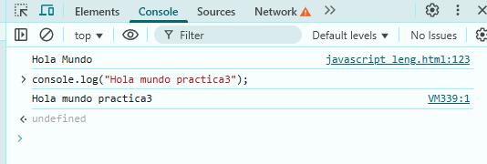

JavaScript es un lenguaje de programación interpretado que se caracteriza por ser dinámico, asíncrono y compatible con varios navegadores.
Dinámico
Es un lenguaje de tipado dinámico, lo que significa que no es necesario definir el tipo de las variables.
Se basa en prototipos, lo que facilita la reutilización de código.
Las propiedades y métodos se pueden agregar a cualquier objeto de forma dinámica.
Asíncrono
Permite ejecutar múltiples tareas simultáneamente sin afectar al rendimiento de la página.
Permite ejecutar procesos en segundo plano mientras el usuario interactúa con otros elementos de la página.
Compatible
Funciona en todos los navegadores modernos, sin necesidad de plug-ins adicionales.
Otros rasgos
Es un lenguaje interpretado, lo que acelera el desarrollo y prueba de código.
Posee algunos objetos predefinidos, como Array, Boolean, Date, Function, Global, Math, Number, Object, RegExp, y String.
Es posible crear objetos nuevos, con sus propios métodos y propiedades.
Se puede mejorar la experiencia de navegación de los usuarios utilizando cookies.
Tipos de datos
Tipos de datos en JavaScript
JavaScript admite ocho tipos de datos:
Número: Para números de cualquier tipo, enteros o de punto flotante.
BigInt: Para números enteros de longitud arbitraria.
String: Para cadenas de texto.
Boolean: Para valores de verdad, verdadero o falso.
Null: Para valores desconocidos.
Undefined: Para valores no asignados.
Symbol: Para identificadores únicos.
Object: Para estructuras de datos complejas.
Tipos de datos primitivos: Son los más simples en JavaScript. Una variable de tipo primitivo solo puede contener un valor.
Tipos de datos no primitivos: Incluyen el objeto, que puede contener tanto objetos integrados como objetos definidos por el usuario.
Literales primitivos: Son inmutables, lo que significa que no se pueden cambiar para representar otros valores.
Ventajas y desventajas
Ventajas de JavaScript:
Fácil de aprender y usar: La sintaxis de JavaScript es relativamente sencilla, lo que facilita su aprendizaje y uso, incluso para principiantes.
Multiplataforma y versátil: Se puede ejecutar en diferentes navegadores, servidores y dispositivos móviles, lo que lo convierte en una opción flexible para el desarrollo web.
Gran ecosistema y comunidad: Cuenta con una gran comunidad de desarrolladores y una amplia variedad de frameworks y librerías, lo que facilita la resolución de problemas y la colaboración.
Desarrollo de aplicaciones interactivas: Permite crear páginas web interactivas, animaciones, actualizaciones en tiempo real y validación de formularios, mejorando la experiencia del usuario.
Desarrollo tanto frontend como backend: Se puede utilizar tanto para el desarrollo de la parte del cliente (frontend) como para el desarrollo del lado del servidor (backend) con frameworks como Node.js.
Popularidad y demanda: JavaScript es uno de los lenguajes de programación más populares y demandados en la industria tecnológica, lo que facilita la búsqueda de empleo y oportunidades.
Desventajas de JavaScript:
Limitaciones de seguridad: JavaScript se ejecuta en el lado del cliente, lo que lo hace vulnerable a ataques de seguridad si no se implementan las medidas de seguridad adecuadas.
Acceso limitado a variables del servidor: JavaScript no tiene acceso directo a las variables del servidor, lo que limita su capacidad para interactuar con bases de datos y otros recursos del servidor.
Posibles problemas de rendimiento: En algunos casos, el código JavaScript puede ser lento y consumir muchos recursos, especialmente en aplicaciones complejas.
No es adecuado para todas las tareas: JavaScript no es la mejor opción para todas las tareas, como el desarrollo de aplicaciones de escritorio o juegos 3D, donde otros lenguajes pueden ser más adecuados.
Impresion de hola mundo

Se puede ver y ejecutar aqui mismo (navegador en inspeccionar y en console)